★Graphic Tools Guide
★セガペインタユーザーズマニュアル/
★Graphic Tools Guide
★セガペインタユーザーズマニュアル/
▲
戻る｜
進む▼
セガペインタユーザーズマニュアル/2.メニュー
ファイル｜
編集｜
イメージ｜
オプション｜
特別｜
ウィンドウ
■ウィンドウメニュー
- ●モニタ表示
- モニタウィンドウを表示します。既に表示されている場合は、一番手前にします。
- ●情報の表示
 I
I
- 情報ウィンドウを表示します。
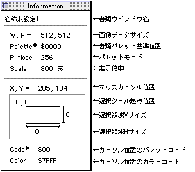
- ●カラーピッカ表示
- カラーピッカウィンドウを表示します。
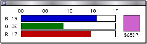
- 現在選択されているパレットのカラーコードを変更することができます。
RGBそれぞれのカラーバー部分をクリックまたはドラッグすることにより、RGB値を変更します。
- ●パレット表示
- パレットウィンドウを表示します。

- 各カラー部分をクリックすることによって、描画用の前景色を選択します。
また、カラー部分をダブルクリックすることにより、カラーピッカーを呼び出してカラーコードを変更することができます。
- ●パターン表示
- パターンウィンドウを表示します。
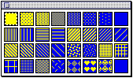
- パターン部分をクリックすることにより、描画用のパターンを選択します。
- ●パネルの表示
- アニメーションパネルを表示します。
詳細は、ドキュメント「5.アニメーション」を参照してください。
- ●テンプレートの表示
- テンプレートを表示します。
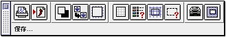
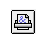
プリント
- 書類の印刷を行います。
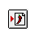
保存
- 書類の保存を行います。
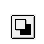
背景色を透明に
- 画像データのペースト時に、背景色を透明色扱いにするかどうかを設定／解除します。
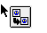
イメージを最適化
- 画像データのペースト時に、カラー情報を最適化を行うかどうかを設定／解除します。
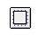
移動時にグリッドを表示
- フローティング状態のイメージデータドラッグ時に、グリッド表示を行うかどうかを設定／解除します。
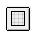
グリッド
- グリッド表示を行うかどうかを設定／解除します。
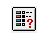
グリッド設定
- グリッド設定を行います。
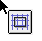
常に吸着
- グリッド吸着処理の設定／解除を行います。
- 選択ツール設定
- 選択ツール設定を行います。
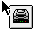
ターゲットSW
- ターゲットとの通信を切断、再接続します。
（ターゲット未接続の場合、このボタンは操作できません）
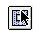
モニタ表示位置
- 現在作業中の書類をモニタウィンドウに表示する位置を指定します。
（ターゲット未接続の場合、このボタンは操作できません）
- ●パターン編集
- パターン編集ウィンドウを表示し、パターンの編集を行います。
なお、編集対象となるパターンは、その時点で選択されているパターンです。
必要に応じてパターンウインドウから編集したいパターンを選択してください。
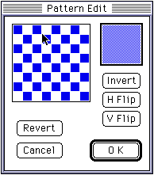
- 編集領域でクリック、ドラッグすることによりpixel単位の編集ができます。
- Invert：pixelのON/OFFを反転します。
- H Flip：パターン全体をH反転します。
- V Flip：パターン全体をV反転します。
- Revert：編集開始の状態まで戻ります。
- ●書類の選択
- 現在開かれている書類を選択します。
▲
戻る｜
進む▼
★Graphic Tools Guide
★セガペインタユーザーズマニュアル/
Copyright SEGA ENTERPRISES, LTD., 1997